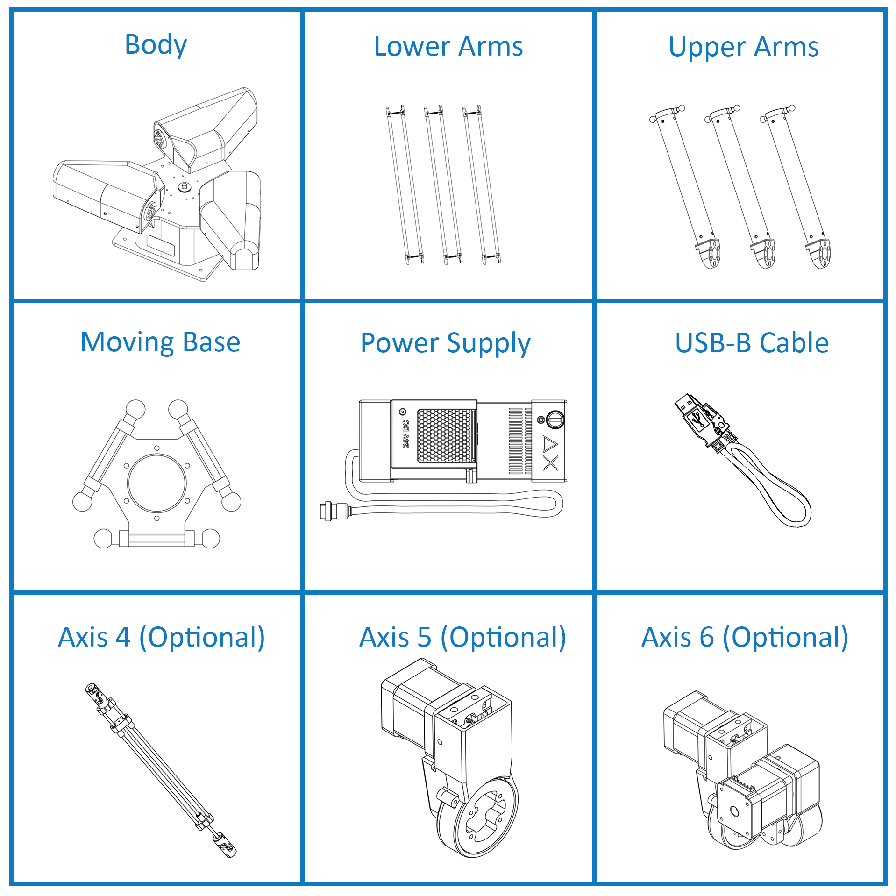
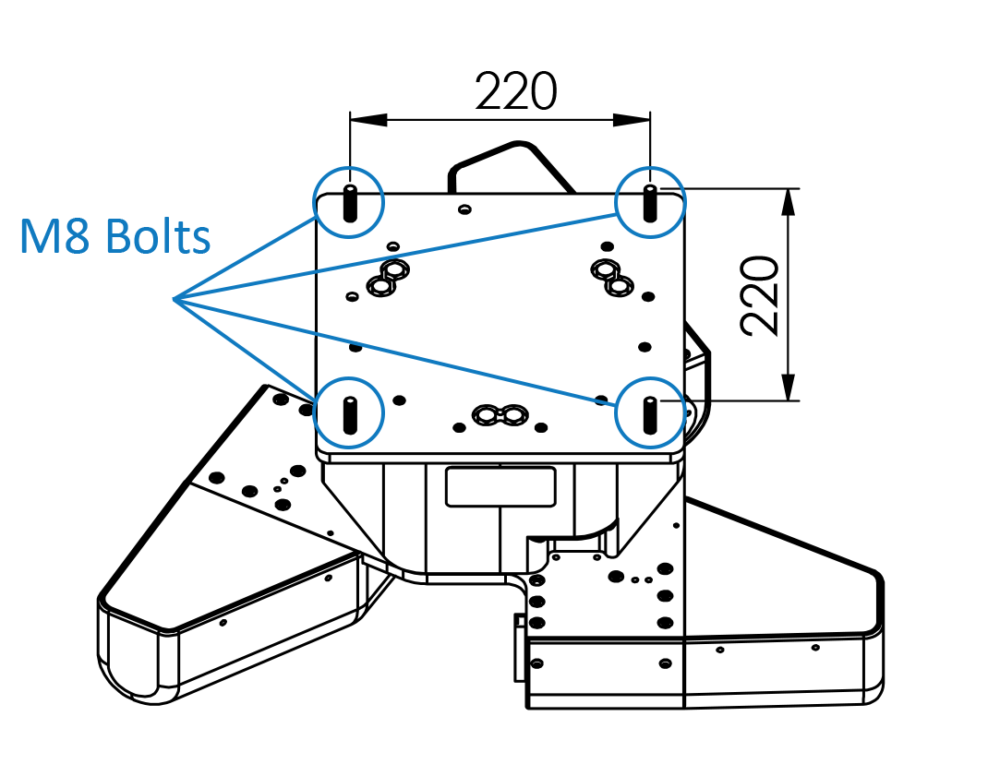
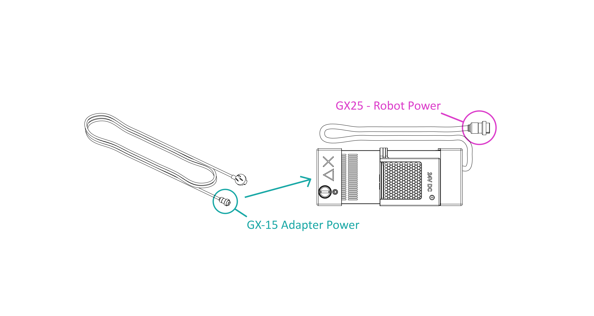
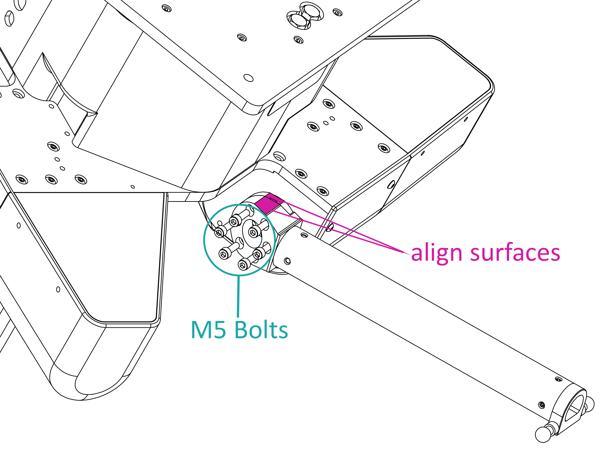
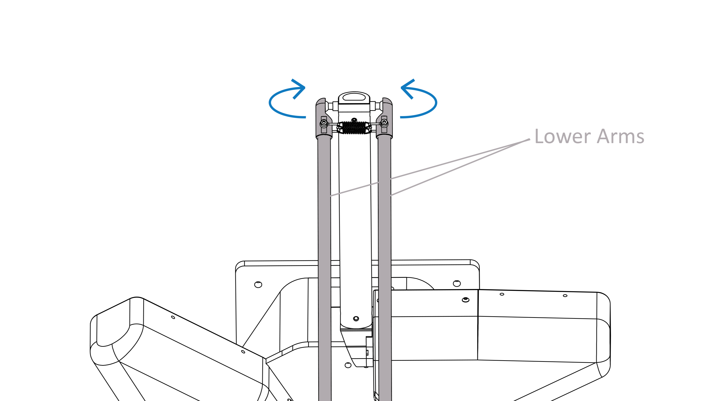
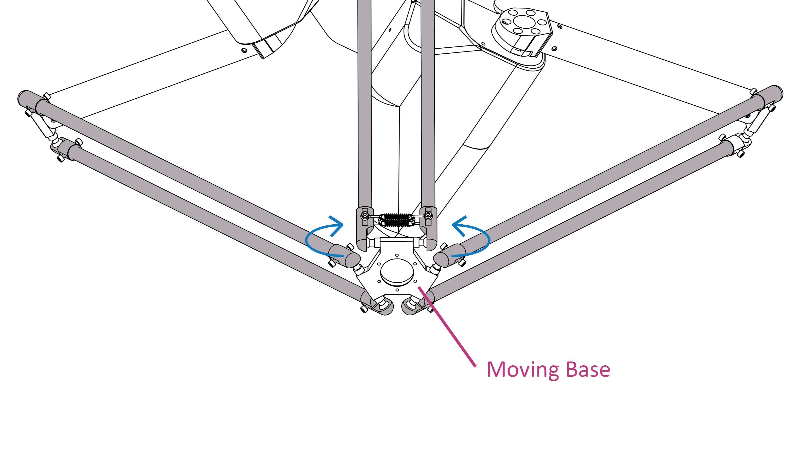
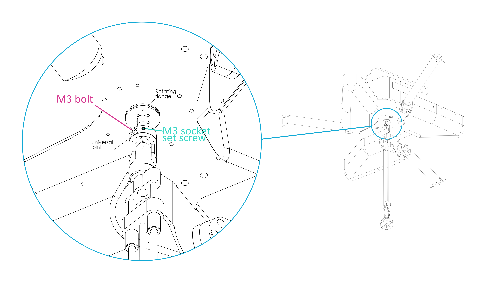
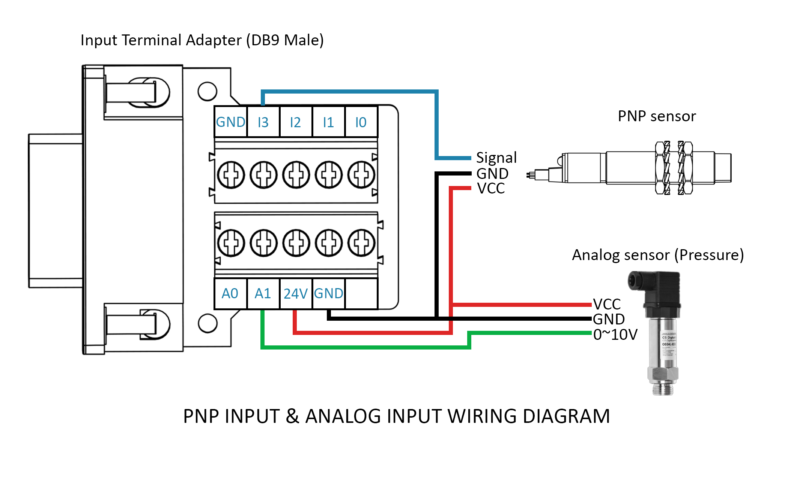
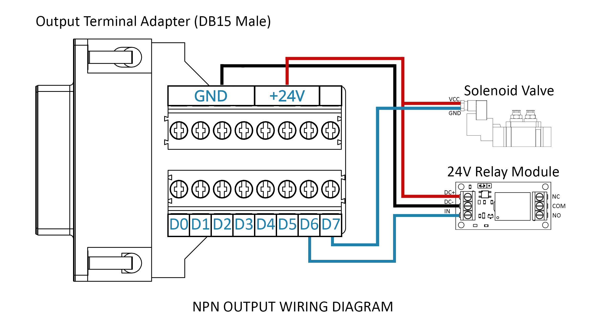

Delta X S Assembly Guide¶
Introduction¶
Welcome to the Delta X S Robot Manual. This guide will help you assemble your Delta X S robot arm step by step. Please read and follow the instructions carefully to ensure safe and proper assembly.
Safety Precautions¶
- Ensure that you are working in a clean and well-ventilated area.
- Wear appropriate personal protective equipment (PPE) such as safety goggles and gloves.
- Turn off and unplug the robot arm before starting to repair the robot.
Package Contents¶
Before you begin, make sure you have received all the components listed in the package:

Assembly Instructions¶
Before mounting the Delta robot, ensure that the frame or surface you are attaching it to is stable and level. Use a measuring tape and a level to verify the frame’s position.
Step 1: Mounting the robot onto the frame¶
On the base of the robot body, there are four Ø8 holes used for attaching the Delta robot body to the frame. Please use M8 bolts to tighten and secure the robot.

Step 2: Power on and Home the robot¶
Power on the robot¶
- Plug in the Robot Power Cable: Connect the power cable from the power supply unit to the robot’s power input port. Ensure a secure connection.
- Turn on the Power Supply: Switch the power button on the power supply unit. You should see the power LED confirming that power is flowing.

Home the robot¶
- Connect the Robot with a Computer: using USB-B cable to the
USB0port on the backside of the robot body. - Control robot with
Delta X Software: Download the software at our download page address - Press
Connectbutton and wait for connection. If the connection is successful, try theHomebutton, the robot will go home and the first move is done.
Step 3: Attaching the arms to the robot body¶
Mounting the Upper Arms to the flanges: DO NOT attempt to rotate the flange if the upper arm is not installed. Use 6x M6x16mm bolts to assemble the upper arm onto the flange, ensuring that the marked surfaces align with each other.

Install the Lower Arms and the Moving Base: Pull the lower arm out and position it on the outside of the ball end of the upper arm. Repeat this process with the other two arms.

Do the same with moving base:

Step 4(Optional): Install Axis 4 (5,6)¶
If the robot has axis 4, assemble the universal joint of axis 4 onto the rotating flange underneath the robot body, ensuring a snug fit. Then, tighten the M3 bolt securely first and then fasten the hex socket set screw M3.

And the basic assembly of the robot is now complete.
Input & Output Connection¶

Digital INPUT pins (24VDC/3mA) & Analog input pins(0-10VDC/0-4096):
| INPUT PIN | |
|---|---|
| Pin 1 - I0 | Pin 6 - A0 |
| Pin 2 - I1 | Pin 7 - A1 |
| Pin 3 - I2 | Pin 8 - 24V |
| Pin 4 - I3 | Pin 9 - GND |
| Pin 5 - GND |
Digital OUPUT pins (24VDC/500mA):
| OUTPUT PIN | |||
|---|---|---|---|
| Pin 1 - D0 | Pin 2 - D1 | Pin 3 - D2 | Pin 4 - D3 |
| Pin 5 - D4 | Pin 6 - D5 | Pin 7 - D6 | Pin 8 - D7 |
| Pin 9~12 - 24VDC | Pin 12~15 - GND |
E-STOP pins:
| E-STOP PIN | |
|---|---|
| Pin 1 - GND | Pin 2 - I4 |
| Pin 3 - I5 | Pin 4 - 24V |
Input Terminal Adapter (DB9 Male) and Wiring Example¶

Output Terminal Adapter (DB15 Male) and Wiring Example¶

Caution¶
- Connect any output as shown above, do not load more than 500mA for each output pin.
- Do not connect any output pin to 24V.
Maintenance¶
Proper maintenance is crucial to ensure the longevity and optimal performance of your Delta Robot. Here are some key maintenance considerations:
- DO NOT expose the robot body, its components, or electronics to direct water or moisture. Water damage can affect the functionality and safety of the robot. Always work in a dry environment.
- Keep the robot and its components clean by wiping down surfaces with a soft, dry cloth.
- Power off the robot when not in use for an extended period.
- Periodically inspect and tighten all bolts, nuts, and connectors to prevent loosening due to vibrations or movements.
By following these maintenance practices, you can maximize the lifespan and efficiency of your Delta Robot while minimizing downtime and potential issues. Always refer to the user manual for specific maintenance guidelines provided by the manufacturer.
Contact Support ¶
Contact Us¶
- Store: https://deltaxstore.com
- Website: https://www.deltaxrobot.com
- Email: deltaxrobot@gmail.com
- Phone: +84 38 875 2005